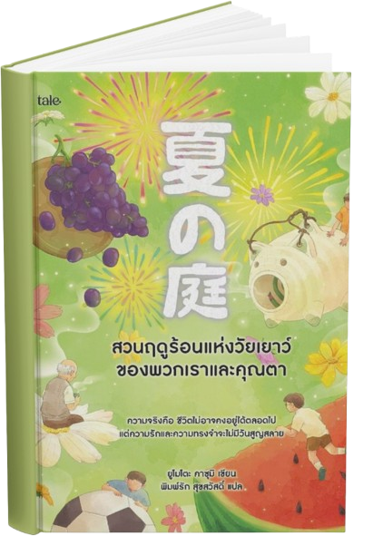

ฤดูร้อนปีหนึ่ง แก๊งเด็กชายชั้นป.6
อย่าง
คิยามะ
ยามาชิตะ
คาวาเบะ
ตัดสินใจไป "สังเกตการณ์" ชายชราคนหนึ่งที่อาศัยอยู่แถบชานเมืองเพราะสงสัยว่าถ้าชายแก่ที่อยู่คนเดียวตายอย่างโดดเดี่ยวจะเป็นเช่นไร
หนังสือเล่มนี้ชวนให้เราทำความเข้าใจชีวิตทำความเข้าใจชีวิตผ่านเรื่องราวของการเติบโต ความสัมพันธ์ ความตาย ซึ่งเป็นส่วนหนึ่งของประสบการณ์ที่มนุษย์ทุกคนต้องเผชิญ และยังให้เราได้ทบทวนความรู้สึกของตนเอง ความกลัว ความสงสัย การสูญเสีย พร้อมเรียนรู้ว่าบางเรื่องในชีวิตอาจไม่มีคำตอบที่ชัดเจน แต่สามารถค่อย ๆ ทำความเข้าใจและยอมรับได้ตามประสบการณ์ที่เพิ่มขึ้น
เรื่องราวยังสะท้อนให้เห็นถึง คุณค่าของความสัมพันธ์ ระหว่างคนต่างวัย แม้จะมีมุมมองและประสบการณ์ต่างกัน แต่การเปิดใจรับฟังกันก็ช่วยให้เข้าใจและมองโลกได้กว้างขึ้น ขณะเดียวกัน การเติบโตไม่ได้หมายถึงการมีอายุมากขึ้นเท่านั้น ยังรวมถึงการกล้าเผชิญหน้ากับความจริง เรียนรู้ที่จะอยู่กับความเปลี่ยนแปลง
สิ่งที่หนังสือทิ้งไว้ให้ผู้อ่าน คือการตระหนักถึงคุณค่าของชีวิตและช่วงเวลาที่ได้ใช้ร่วมกันรอบข้าง เพราะเราไม่อาจรู้ได้ว่าความสัมพันธ์หรือความทรงจำใดจะกลายเป็นสิ่งสำคัญในวันข้างหน้า เรื่องราวนี้จึงเตือนให้เราใส่ใจกับปัจจุบัน เห็นความหมายของช่วงเวลาธรรมดา และ เรียนรู้ที่จะใช้ชีวิตอย่างเข้าใจทั้งตัวเองและผู้อื่นมากขึ้น
A THOUGHT TO REMEMBER